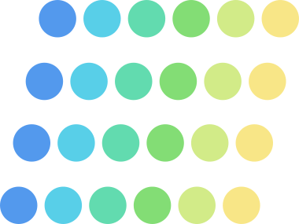

Physical
Active Learning
Laboratory
Stanford University · Mechanical Engineering
Starting 1/1/27: We build robot learning algorithms that work in real time, in the real world, on real hardware. We target diverse platforms, aiming to enrich how robots interact and adapt in the physical world.
Overview
Starting 1/1/27, the Physical Active Learning Laboratory will be part of the Department of Mechanical Engineering and the Stanford Robotics Center. We build algorithms that allow robots to safely learn, rapidly adapt, and actively exploit their physical environment in real time. From pushing the limits of high-performance autonomous racing to navigating complex field logistics, our mission is to deploy reliable, safety-critical learning algorithms that fundamentally enrich robot-environment interaction across diverse deployments. We leverage techniques from reinforcement learning, optimal control, dynamical systems, information theory, and more to develop algorithms that are theoretically grounded and practically deployable.
News
-
2026
NEW Thomas A. Berrueta joins Stanford University on 1/1/2027 as an Assistant Professor of Mechanical Engineering, launching the Physical Active Learning Lab. Positions are available, see our join page.
-
2026
Our paper on environment-aware GNSS covariance learning for autonomous racing is accepted to ICRA 2026, and our workshop paper on online continual learning for robust LiDAR perception at racing speeds is named a Best Paper Finalist.
-
2025
Prof. Berrueta is named Associate Editor of IEEE Robotics and Automation Letters (RA-L), handling Aerial & Field Robotics and Theoretical Foundations.
-
2025
As technical lead of Caltech Racer, the autonomous IndyCar program makes its debut at its first U.S. road-course challenge — featured by Caltech Magazine.
-
2025
Invited talks: “Robot learning on the edge” at the ELLIIT Robot Learning Symposium (Lund University, Sweden), and a robotics panel at a16z Tech Week (Los Angeles).
-
2024
Maximum Diffusion Reinforcement Learning published in Nature Machine Intelligence, and Prof. Berrueta is named a Microsoft Future Leader in Robotics and AI. Article